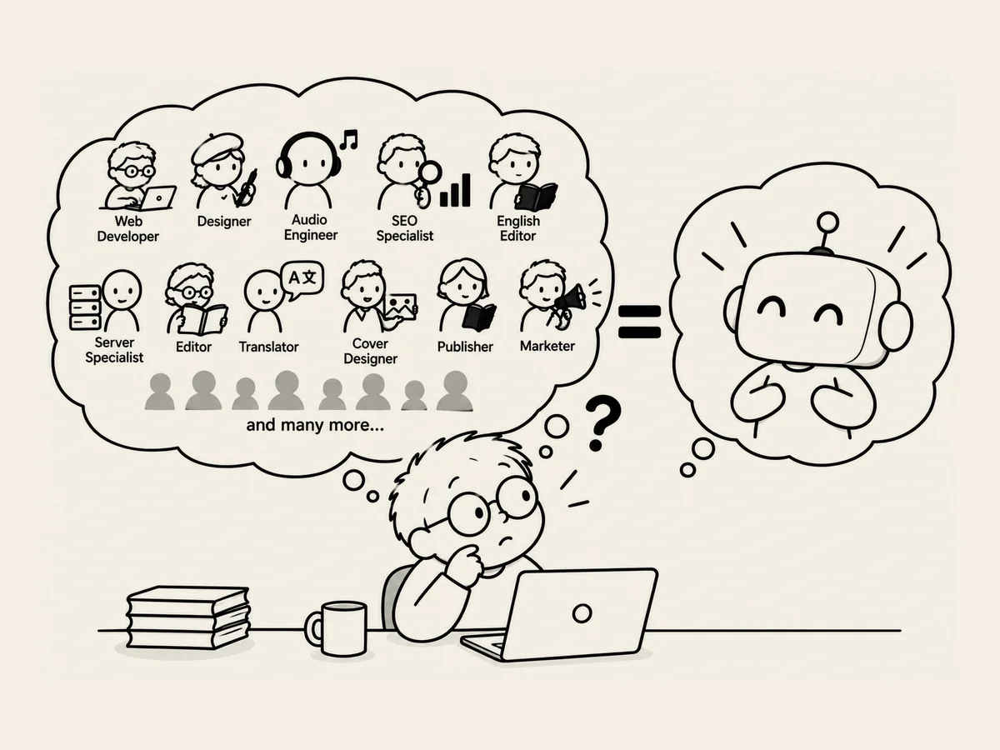

11.
Combien faudrait-il d’experts ?
Créer un site web.
Si je devais faire aujourd’hui
tout ce que je fais
sans l’IA,
combien de personnes me faudrait-il ?
Un développeur web.
Un designer.
Un ingénieur du son.
Quelqu’un qui connaît le SEO.
Quelqu’un pour vérifier l’anglais.
Quelqu’un qui connaît les serveurs.
Hein ?
Ça fait déjà combien de personnes ?
Puis j’ai commencé à faire un livre,
et la liste s’est encore allongée.
Édition.
Traduction.
Design de la couverture.
Publication.
Promotion.
Au début,
je me suis dit qu’il en faudrait peut-être une dizaine.
Dix ?
Non.
Si on découpe le travail en petites tâches,
on pourrait même arriver à cent.
Avant,
pour faire ce genre de choses,
il aurait fallu des experts.
Aujourd’hui,
je commence d’abord.
Grâce à l’IA.
